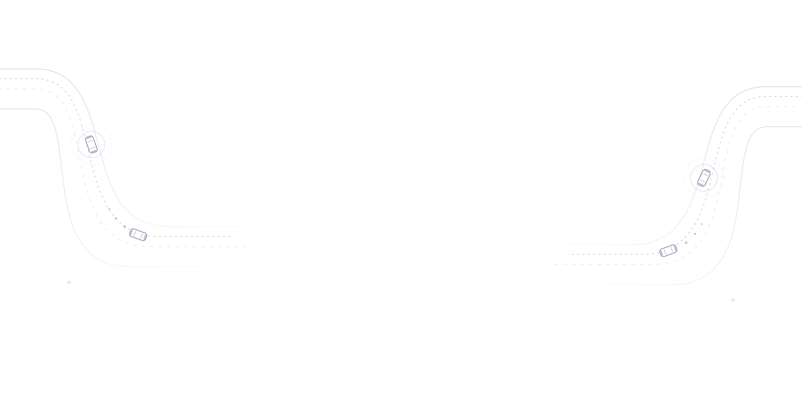
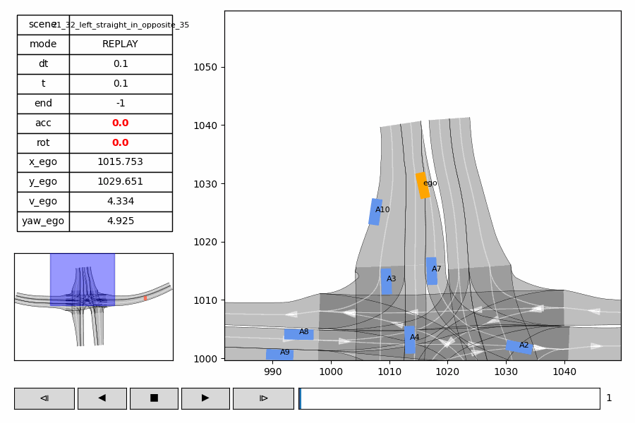
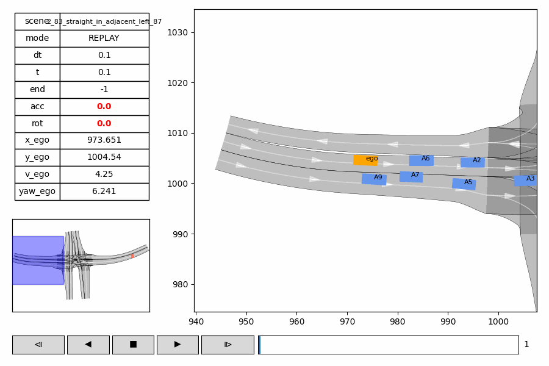
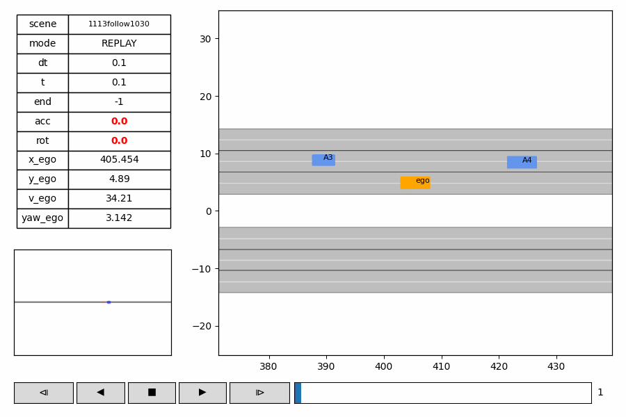
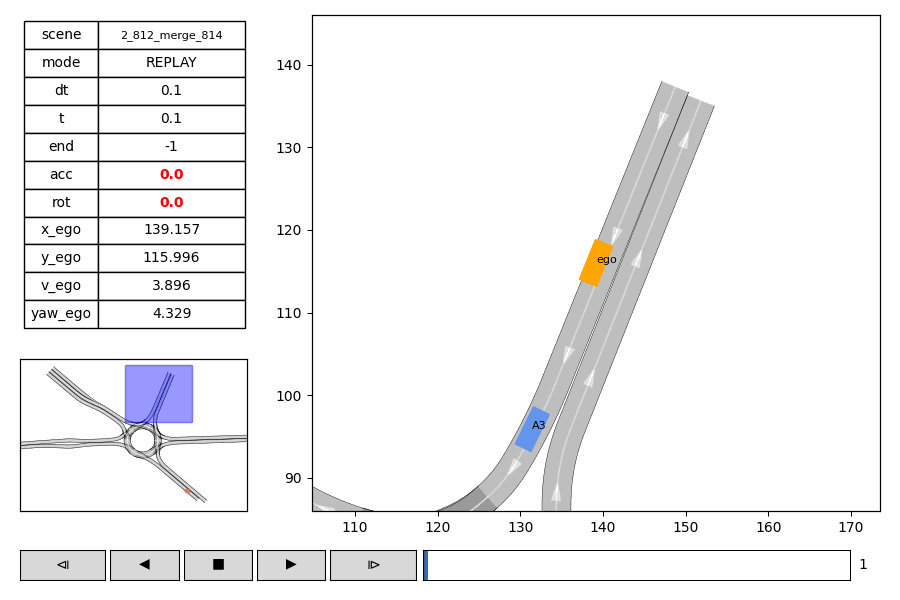
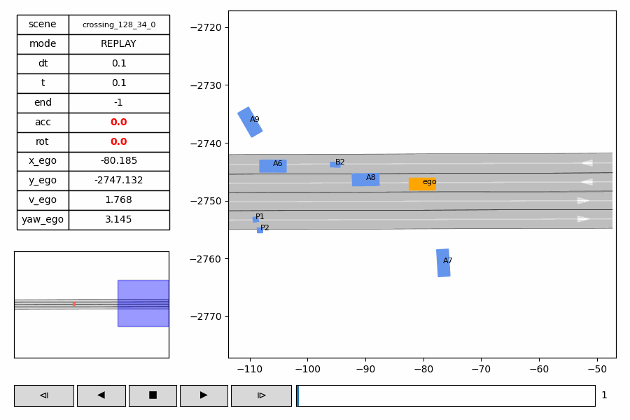
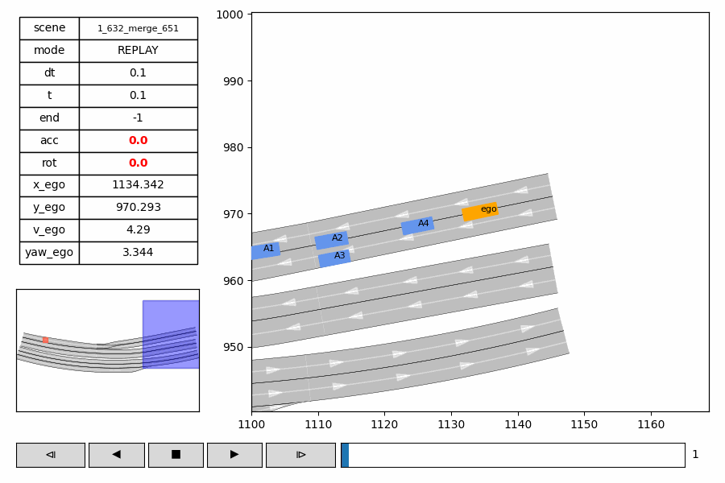
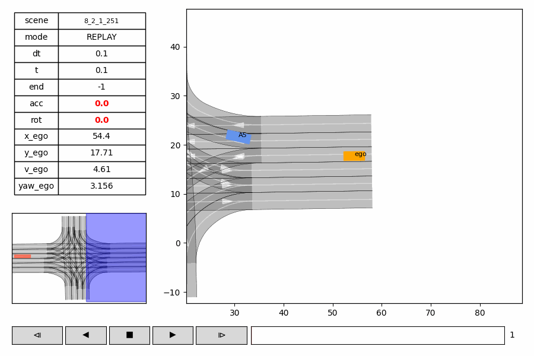
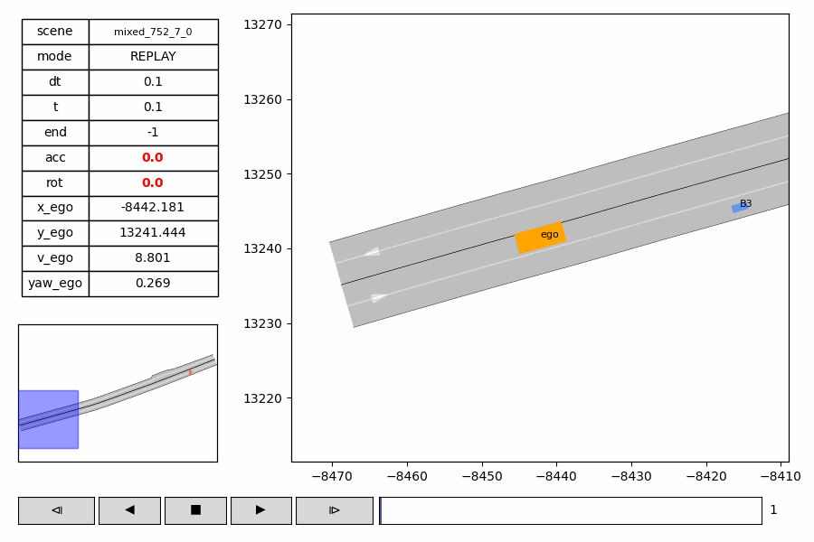

Scene 198f7a18370f7c3a
WOMD · Closed-loop simulation

1 College of Transportation & Key Laboratory of Road and Traffic Engineering of Ministry of Education, Tongji University, Shanghai, China
Corresponding author: Jie Sun
Emails: {da_zhao, yuhangchen, jialin_fan, sunjian, jie_sun}@tongji.edu.cn
Traffic scenario generation is essential for training, testing, and safety validation of autonomous vehicles (AVs), especially when real-world data coverage is limited. Existing methods mostly face a three-way trade-off among open-loop trajectory fitting, closed-loop simulation robustness, and inference efficiency. Autoregressive methods are typically efficient in open-loop fitting but susceptible to error accumulation and policy-induced state-distribution shift in long-horizon closed-loop rollouts. Diffusion-based methods provide strong multi-modal behavior modeling and competitive generation quality, but iterative denoising substantially increases inference latency and limits simulation throughput. Moreover, repeated refinement under a fixed scene condition is not fully aligned with the continuous feedback and frequent replanning required by closed-loop simulation. To address this challenge, we propose UniDBO, a Unified Dual-Branch One-step denoising framework for autonomous driving scenario generation, which uses a shared scene encoder and two jointly optimized complementary branches with distinct roles—a continuous-scale branch (CS) for open-loop trajectory fitting and a discrete high-noise branch (DHN) for robust closed-loop simulation. Through joint training, UniDBO coordinates open-loop fitting and closed-loop robustness while preserving one-step inference efficiency. We evaluate UniDBO with different benchmarks, covering in-domain open-loop and closed-loop evaluation, zero-shot cross-domain generalization, and system-level closed-loop AV testing in unseen scenarios. Results show that UniDBO improves the open-loop/closed-loop balance while maintaining high inference efficiency, and achieves competitive zero-shot generalization on the evaluated benchmarks. Code is available at https://github.com/canalone/UniDBO.
Joint training and mode-aware one-step denoising.

We evaluate UniDBO on a fixed ordered set of 1,000 WOMD/Waymax scenarios with eight-second closed-loop rollouts. At each one-second replan, DHN generates joint controls from an independent Gaussian query under the updated scene condition in one denoising step. The simulator executes the predicted prefix, and the resulting state defines the next scene condition.
WOMD · Closed-loop simulation
WOMD · Closed-loop simulation
WOMD · Closed-loop simulation
WOMD · Closed-loop simulation
WOMD · Closed-loop simulation
WOMD · Closed-loop simulation
WOMD · Closed-loop simulation
WOMD · Closed-loop simulation
WOMD · Closed-loop simulation
We apply the WOMD-trained checkpoint to 500 high-density INTERACTION scenarios without target-domain training or fine-tuning. The examples below show eight-second closed-loop rollouts across unseen merging, intersection, and roundabout scenes.
Case 000336 · Merging
Case 000341 · Intersection
Case 000180 · Roundabout
Case 000039 · Roundabout
We evaluate UniDBO in system-level AV testing on the OnSite platform using 800 organizer-provided scenarios. Each scenario supplies an HD map, existing-agent states, and a 31-frame scene prefix. UniDBO generates background-agent futures that interact with external ego planners under the same scoring protocol.







